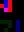
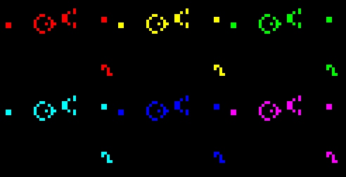

我的CS61c学习笔记
- 感谢csdiy提供的课程资料
- 看的是20Fall的课程视频
- 由于前六节的内容是开学前看的，所以从第七节开始记录笔记。
- 课程资料可以fork这个仓库
- 特别说一嘴，这个课的老师（丹）相当有趣😃，甚至有出场动画。
RISC-V intro
- 指令集架构： 指令集架构（Instruction Set Architecture，ISA）是计算机系统的一个抽象层，定义了计算机可以执行的指令类型、数据类型、寄存器、内存地址模式等。它是硬件和软件之间的接口，使得软件能够与硬件进行交互。
- 主流指令集架构： x86（Intel和AMD的处理器使用）、ARM（广泛应用于移动设备）、MIPS（曾经在嵌入式系统中流行）、RISC-V（新兴的开源指令集架构？）。
- 优秀程序员和普通程序员的区别：前者往往更懂汇编语言和计算机体系结构。😃
- 70-80年代，计算机体系结构领域出现了RISC（精简指令集计算机）和CISC（复杂指令集计算机）两大阵营的争论。RISC强调简化指令集，以提高执行效率，而CISC则追求丰富的指令集以简化编程。
- RISC-V started in Summer 2010 to support open research ad teaching at UC Berkeley. It is now supported by the RISC-V Foundation, which has over 300 members worldwide.
深入理解RISC-V🐶
basic concepts
- Registers，there is no variable in assembly language, to keep Hardware simple. It is near to the cpu and fast.And their number is limited, which is a main feature of ISA. RISC-V has 32 registers, in the RV32 one word is 32 bits. Referred by x0-x31, and x0 is special, always 0.
- Hash(#) comments, like python.🐍
- In assembly language, each statement(called an instruction) executes exactly one of a short list of simple commands.
Addition and Subtraction
- add x1,x2,x3 # x1 = x2 + x3
- sub x4,x5,x6 # x4 = x5 - x6
- example:
|
|
Immediates
- Immediates are numerical constants.
- addi x3,x4,10 # x3 = x4 + 10
- but don’t support sub immediate
- why? because we can use addi with negative immediate to achieve the same effect.
- addi x3,x4,-10 # x3 = x4 - 10
- how to move?
- add x1,x0,x2 # x1 = x2
- add x0,x1,x2 # will not do anything, because x0 is hardwired to 0.
Project 1: Life Game
Preparation
- use PPM ASCII files (type P3) with maximum value 255, for example:
|
|
- P3 means ASCII encoding,4 5 means width=4,height=5,255 means max color value.
- each pixel is represented by three integers(RGB), each ranging from 0 to 255.
- (255,255,255) is white,(0,0,0) is black.
- the command convert can be used to convert between png to ppm, for example:
|
|
- structure of the Image and I/O functions
|
|
Part A1: Reading,writing,and freeing images
- 说实话不难但是挺坑的🤣
- 使用malloc分配image二维数组，image要分配，然后每一行也要分配。
- 一个踩坑点是write时要注意格式，%3d，一定是3位！！！,中间有空格，然后col之间三个空格。
- free的时候先free每一行，然后free image，最后free Image结构体本身。
Part A2: 使用刚写的A1藏信息
- 人眼无法分辨颜色的微小变化，可以利用这一点来隐藏信息。
- 比如说rgb一般是8位表示，但是人眼对于低4位的变化不敏感，所以我们可以把信息藏在低4位中。
- 这里直接用最低一位，0和1来表示黑白。天才啊😆
- 需要完成两个辅助函数：一个用来设置某个位置像素的新值（根据B的最低位），另一个函数将整个Image使用第一个函数进行挨个像素处理返回一个新Image。
- 写一个的简单的主函数后可以得到隐藏信息是:secrect message,是的就是两个单词，就是长得歪歪扭扭的🤣
Part B: Game of Life
|
|
-
使用格式：./gameOfLife [file] [rule]
-
或者直接使用./frames.csh [file] [rule] [num_frames]来生成多帧图片和gif。
-
该wiki提供了很多有趣的规则，可以尝试不同的规则看看效果。
-
可以将24位颜色分成24个独立的游戏，状态完全独立但是颜色可以叠加，增加了趣味性？
-
挺简单的？，主要是边界条件要注意（warp around），0和rows-1,0和cols-1要连接起来。（可以考虑直接使用模运算处理）。
-
善于使用valgrind检查内存泄漏，凡是用malloc分配的最后都不要忘记了free。
-
分成24个颜色通道后的遍历逻辑写起来挺繁琐的，我是直接循环24次，处理时需要判断8，16的大小关系，感觉不如直接分成3中颜色情况处理来的清晰。
-
效果展示(run ./frames.csh GliderGuns 0x1808 100 and ./frames.csh glider 0x1808 10 and convert ppm to gif):


Part C: 其实官方没有😃
我自己写了一个将信息图片藏入已知图片的小函数，在我的仓库叫hide.c，需要先手动使用上文提到过的convert命令将png转换成ppm格式，然后运行
|
|
这里我提供一个例子,you can try to solve this little puzzle🧩.
click for the answer!
- 对了，这个黑白的隐藏信息图片是利用我的词云程序raster.py生成的，请看另一篇文章wordcloud with python,可以在demo.py中修改word1的内容(比如改成"hello world")，然后重新运行生成隐藏信息图片(temp.png)。